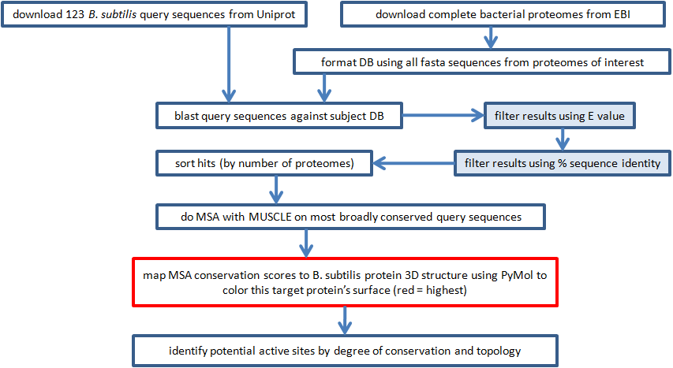

| First we acquired protein sequence data, and blasted the query sequences against the subject proteomes.
BLAST attempts to align pairs of sequences such that a scoring function is maximized. Very similar sequences
probably share a common ancestral sequence, which suggests that they have the same or similar function. Sequences
with a common ancestor are homologous. The threshhold E and percent identity were used to filter out
most alignment pairs.
Second we aligned multiple sequences using MUSCLE. Multiple sequence alignment algorithms assume that the sequences being aligned are homologous. By aligning many homologous sequences we identified which specific residues are important to a set of similar proteins. These residues, known as motifs, may be far apart in the sequence but close together in 3D space (Zvelebil and Baum, 2008). They often coincide with an active site and, coincidentally, a good drug target. Third we mapped conservation scores from the MSAs to each broadly conserved B. subtilis protein. Of course, the quality of the conservation scores was limited by the quality of the MSA. |
|  |